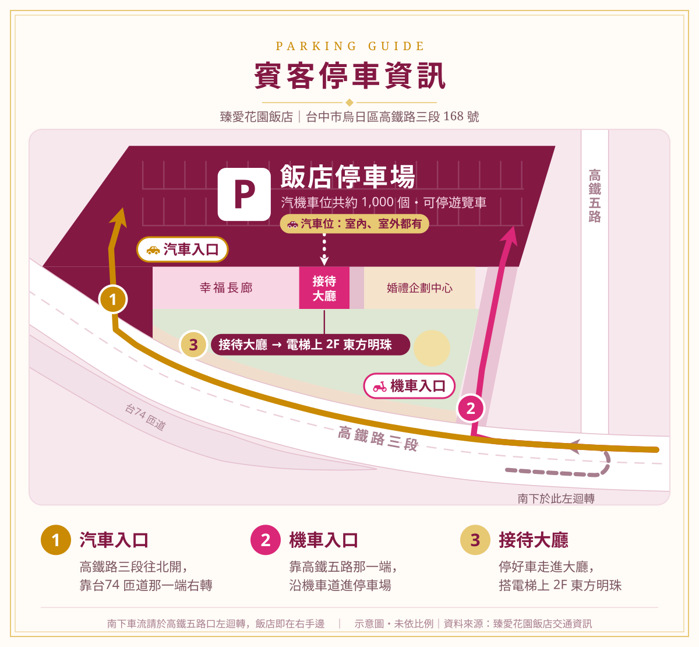
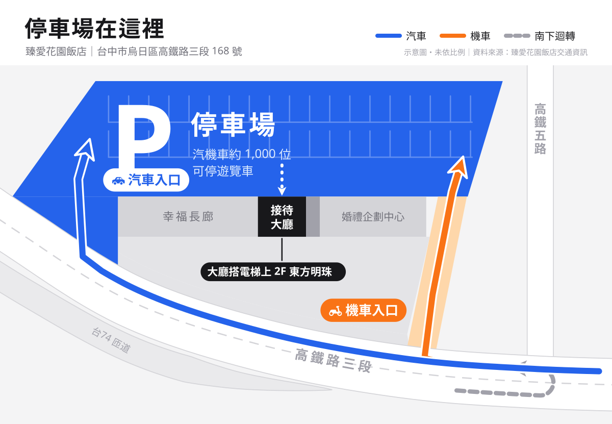
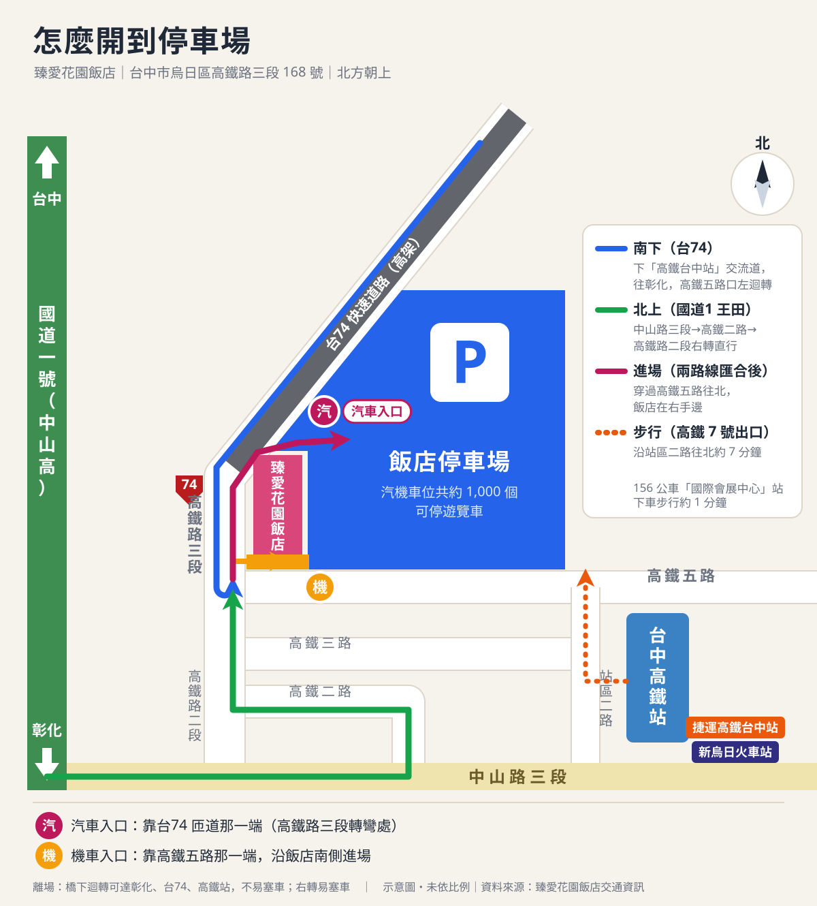
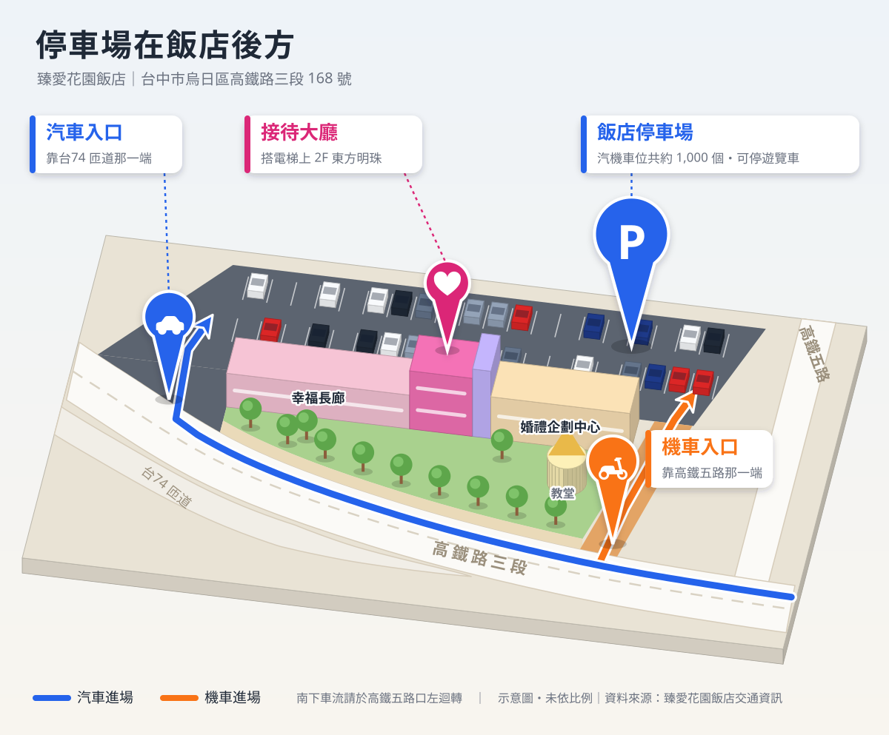
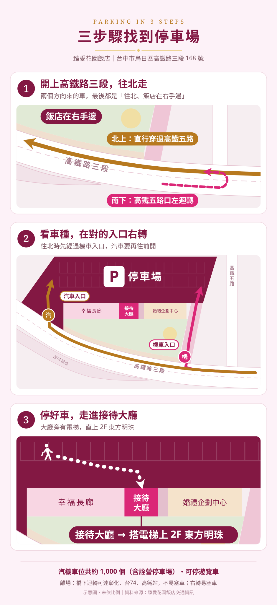
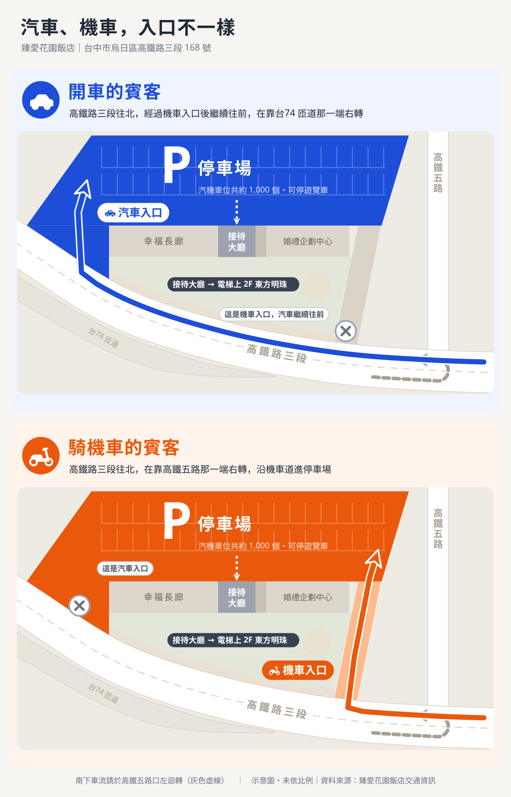
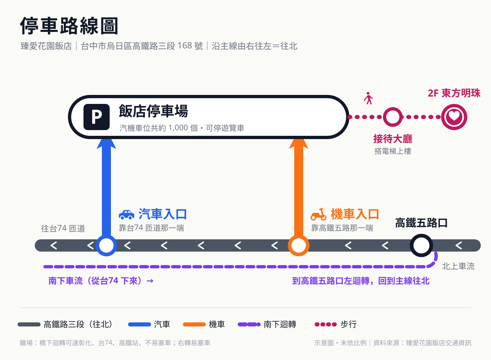
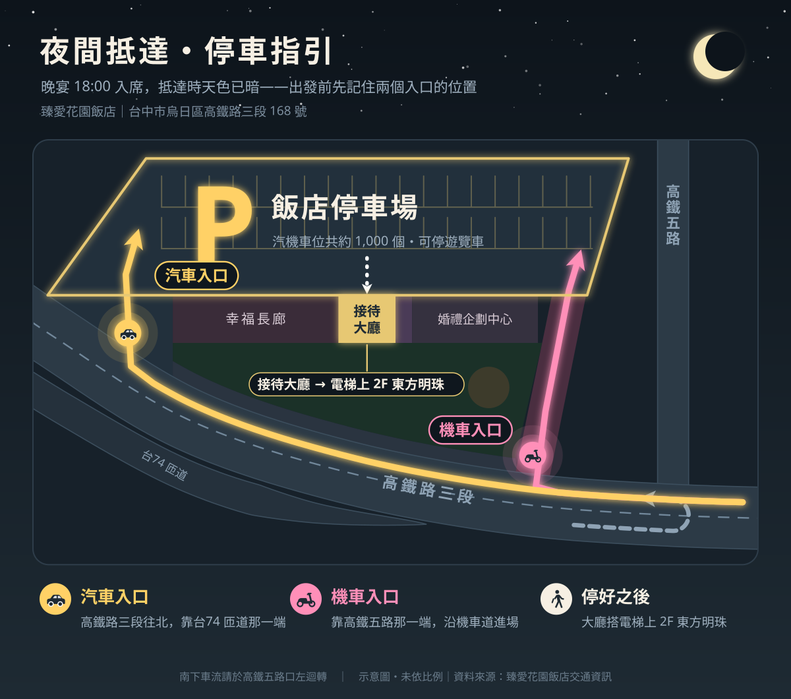
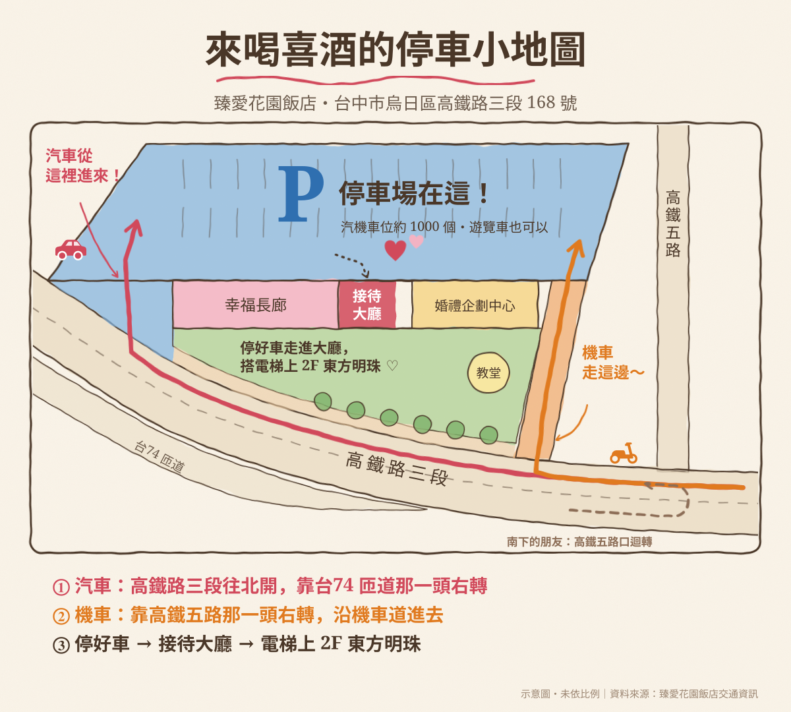
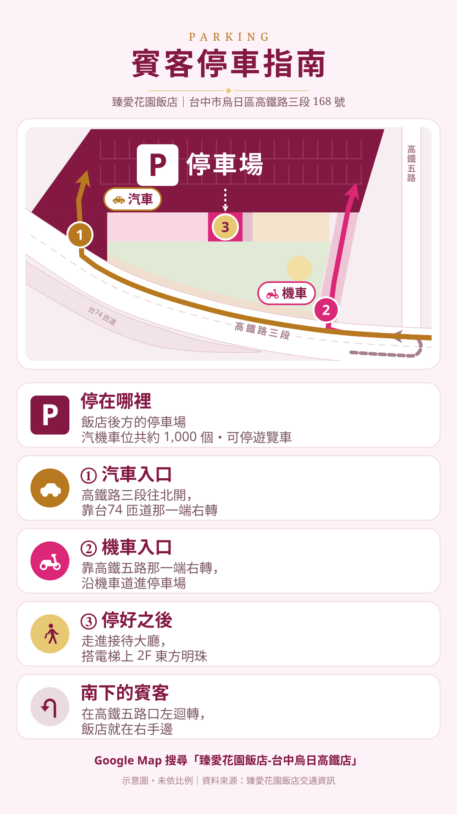

V01 喜帖雅緻版沿用喜帖網站的酒紅、玫瑰粉與燙金色票，停車場用最深的酒紅標出，放進網站不會跳色。

V02 極簡扁平版全圖只有灰階加兩個顏色：藍＝汽車與停車場、橘＝機車。資訊最少、最不花俏。

V03 周邊路網版（北方朝上）北方朝上、方位與 Google 地圖一致。畫出南下／北上兩條開車路線，以及高鐵站走過來的步行路線。

V04 立體鳥瞰版斜俯視的立體模型：建物有高度、停車場停滿車，入口用浮在空中的大頭針標示，最有「現場感」。

V05 三步驟圖卡版手機直式。把「開到哪、從哪進、停好後怎麼走」拆成三格，每格只畫那一步需要的東西。

V06 汽機車分流版汽車一張圖、機車一張圖，各自只亮自己的路線；另一個入口打叉，提醒不要轉錯。

V07 捷運路線圖版不畫地形，把高鐵路三段當成一條主線、入口與大廳當成站點，只回答「依序經過什麼、在哪轉」。

V08 夜間版晚宴 18:00 入席、12 月天黑得早，賓客抵達時是晚上。深色底配發光的入口與停車場外框，跟開場畫面的夜色同調。

V09 手繪插畫版水彩色塊加抖動線條與手寫註解，像新人親手畫給朋友的小地圖，最有人味。

V10 手機直式資訊卡版1080×1920 直式（LINE／限時動態比例）。上半張圖、下半五列大字重點，存成圖片就能直接轉傳給長輩。